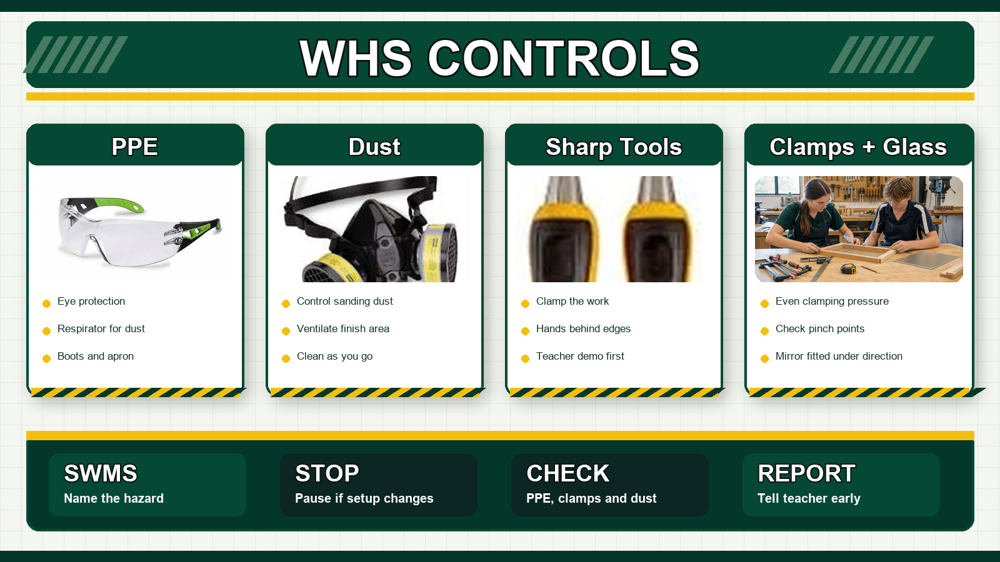
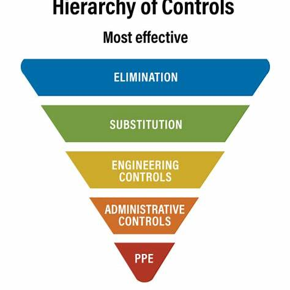
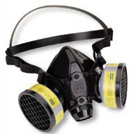
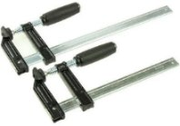

Control hazards before tools, machines, finishes or glass become a problem.
Theory Block 1
Workshop Safety
Safety is not separate from the project. It is part of every mark, cut, joint, finish and cleanup.
Key Idea
Safe workers control hazards before they become injuries.
In the mirror project, hazards include sharp tools, moving blades, dust, noise, chemicals, clamps, glass and crowded benches. A safe student notices the risk, chooses the right control, and asks before guessing.
Why It Matters
Most workshop injuries come from rushing, poor setup or hands being in the wrong place. Safe setup protects people and usually makes the work more accurate too.
What Students Need To Do
Wear eye protection, solid shoes and any required PPE.
Clamp timber before drilling, chiselling or routing.
Keep hands behind cutting edges.
Use push sticks, guards and safe zones around machines.
Read finish labels and MSDS information before using chemicals.
Clean sawdust, spills and offcuts before they become hazards.
Common Mistakes
Holding small timber pieces by hand while drilling or chiselling.
Standing in line with a cutting path or blade.
Leaving oily rags, sawdust or scraps on the bench.
Using a tool before the safety demo has been completed.
Risk Control In The Mirror Project
Students should be able to name the hazard, explain the risk, and choose a control. This is the same thinking used in a simple SWMS: what can hurt someone, how likely or serious is it, and what will we do before starting work?

Use this before practical lessons to connect PPE, dust control, sharp tools, clamps and finishing hazards to the SWMS.
Task
Main Hazard
Control
Marking and cutting
Sharp tools, saw teeth, timber movement.
Clamp work, keep hands clear, cut on the waste side, use PPE.
Chiselling joints
Hand in front of chisel, timber slipping.
Chisel away from the body, clamp securely, take small cuts.
Routing
High-speed cutter, noise, dust, kickback.
Teacher setup, guards, dust control, hearing and eye protection, test cuts.
Teacher supervision, edge protection, correct backing and final hang check.
MSDS / SDS Reading
For finishes, glue and solvents, students should know where to find the hazard symbols, PPE advice, first aid instructions, storage requirements and disposal method. If the label or SDS says ventilation or gloves are required, that is not optional decoration.
Quick Check

Use higher-level controls first: remove, substitute, isolate or engineer the hazard where possible.

Dust and fumes need proper controls, especially when sanding or finishing.

Clamps hold work securely so hands can stay away from cutting edges.
Before Moving On
Answer the Quick Check, then return to the theory menu when you are ready for another topic.